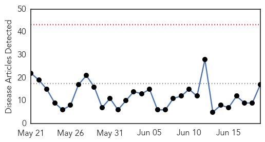
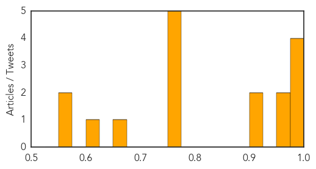
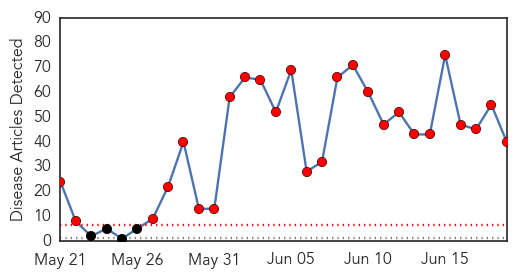
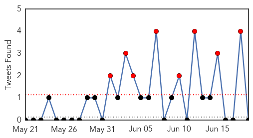

Influenza
30-Day Web Trend
0 alerts, 0 warnings

30-Day Twitter Trend
1 alerts, 0 warnings

Article Locations

Article Confidences
Top Articles:
- 0.998
- Adults go to pediatricians for flu vaccine, say doctors
- 0.989
- Doctors spell out flu risks among kids during monsoon
- 0.983
- Science, Technology and Medicine News Updates From Asia
- 0.977
- SA 'in for a bad flu season'
- 0.957
- Time to pick ourselves up-INSIDE Korea JoongAng Daily
- 0.955
- North Korea claims to have MERS cure
- 0.925
- H3N2 flu active again, claims 16 lives in HK in 6 days
- 0.900
- Pyongyang claims to invent cure for MERS
- 0.761
- Dog adopted in St. Paul tests positive for canine flu
- 0.751
- June 18, 2015 Archives
- 0.751
- June 18, 2015 Archives
- 0.751
- June 18, 2015 Archives
- 0.751
- June 18, 2015 Archives
- 0.655
- Twin Cities see first known case of canine influenza at St. Paul shelter
- 0.609
- Secret Vaccine Court
- 0.568
- Minnesota records 13 straight days with no new bird flu
- 0.557
- Turning the corner on bird flu? 2 weeks without a new case
Top Tweets:
-
No tweets found for Jun 19, 2015
MERS
30-Day Web Trend
26 alerts, 0 warnings

30-Day Twitter Trend
19 alerts, 2 warnings

Article Locations

Article Confidences
Top Articles:
- 1.000
- Malaysia confirms first MERS-CoV fatality
- 0.999
- MERS Reaches Thailand, Death Toll In Korea Now 24
- 0.999
- Middle East respiratory syndrome coronavirus (MERS-CoV) – Republic of Korea
- 0.999
- North Korea Claims It Has A Cure For MERS, AIDS, SARS, Ebola
- 0.999
- World Health Organization, WHO calls for stepping up vigil for MERS, Thailand confirms case
- 0.999
- Thailand reports first MERS case
- 0.999
- MERS spread shows signs of slowing
- 0.999
- Thailand confirms first Mers case in visitor from Oman
- 0.999
- As MERS virus spreads, is WHO doing enough? — RT Op-Edge
- 0.999
- (2nd LD) S. Korea reports another MERS death, one new case
- 0.999
- MERS in Thailand: PM insists killer virus is under control
- 0.999
- South Korea MERS outbreak: 24 dead, more than 160 infected
- 0.998
- Four-day wait to diagnose MERS stokes fears in Thailand
- 0.998
- SGGP English Edition- Vietnam’s health sector makes concerted efforts to prevent MERS-CoV
- 0.998
- Thai Health Ministry Confirms First MERS Case in the Country
- 0.997
- MERS: No cause for alarm in Philippines
- 0.997
- MERS pace slows in Korea; more under Thai monitoring
- 0.996
- Thailand Confirms First MERS Case: Health Ministry
- 0.995
- The Chosun Ilbo (English Edition): Daily News from Korea
- 0.994
- First Case Confirmed By Officials
- 0.993
- Thailand Examines 59 People after First MERS Case
- 0.993
- Thailand Examines 59 People after First MERS Case
- 0.993
- Going for Haj or to Thailand? Check out MERS advisory
- 0.991
- Thailand examines 59 people after first MERS case
- 0.991
- Govt to come up with detailed guidelines for MERS
- 0.990
- South Korea MERS outbreak has 'levelled off'; one new case
- 0.988
- PM Prayut: 'No MERS patient in Thailand yet'
- 0.984
- MERS Deaths Rise to 20 in South Korea
- 0.983
- Coronavirus Claims 24th Victim in South Korea
- 0.982
- MERS coronavirus spreads Thailand, China develops 15-minute MERS test
- 0.980
- First Case of MERS in Thailand Reported
- 0.979
- Be ready for MERS virus, schools told
- 0.979
- Coronavirus claims 24th victim in South Korea
- 0.970
- Family Members of 1st MERS Patient in Thailand Undergoing Tests
- 0.963
- More tests needed to rule out MERS for South Korean in Slovakia
- 0.949
- Update on latest MERS situation in Korea and Thailand
- 0.925
- Epidemiological update on MERS-CoV from South Korea
- 0.921
- North Korea claims it has a cure for MERS
- 0.919
- North Korea: cure for MERS is available
- 0.765
- DOH assures readiness for MERS-CoV
Top Tweets:
- 0.655
- AFD Blog `Korean MERS Cluster Increases By 1 – Now 166 Cases, 24 Deaths' MERS-CoV http://t.co/Ij3p96VYof
- 0.618
- AFD blog `Saudi MOH Announces 2 New MERS Cases In Hofuf' MERS-CoV http://t.co/gkFckEuiS1
- 0.535
- AFD Blog `@WHO: Korean MERS Update, Case Line Listing & Epi Curve' MERS-CoV http://t.co/egrO6bPK68